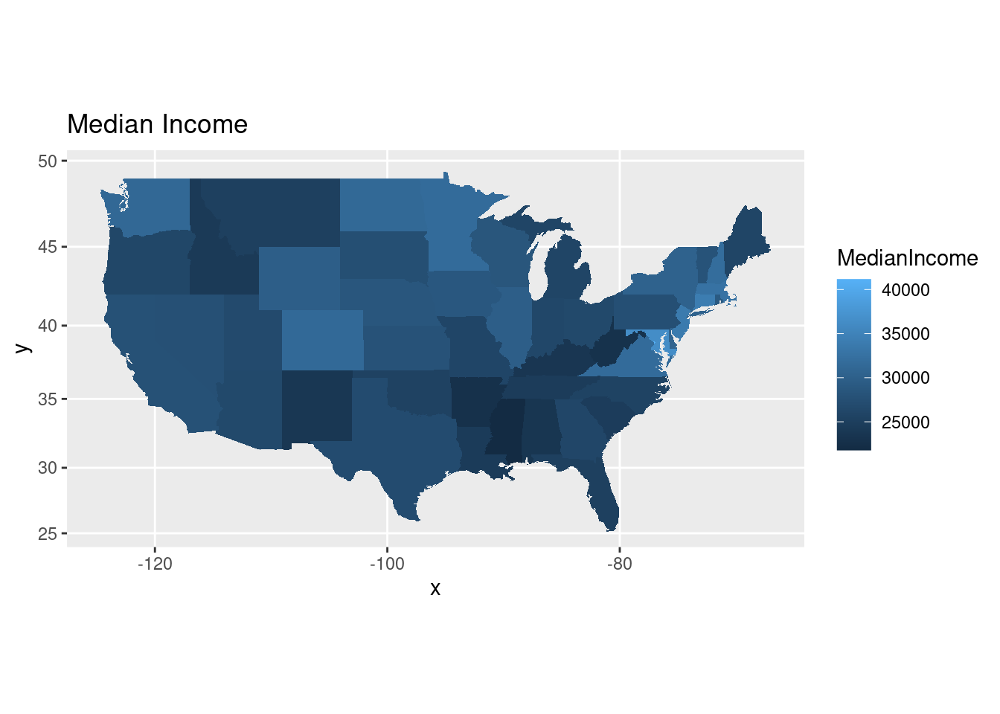
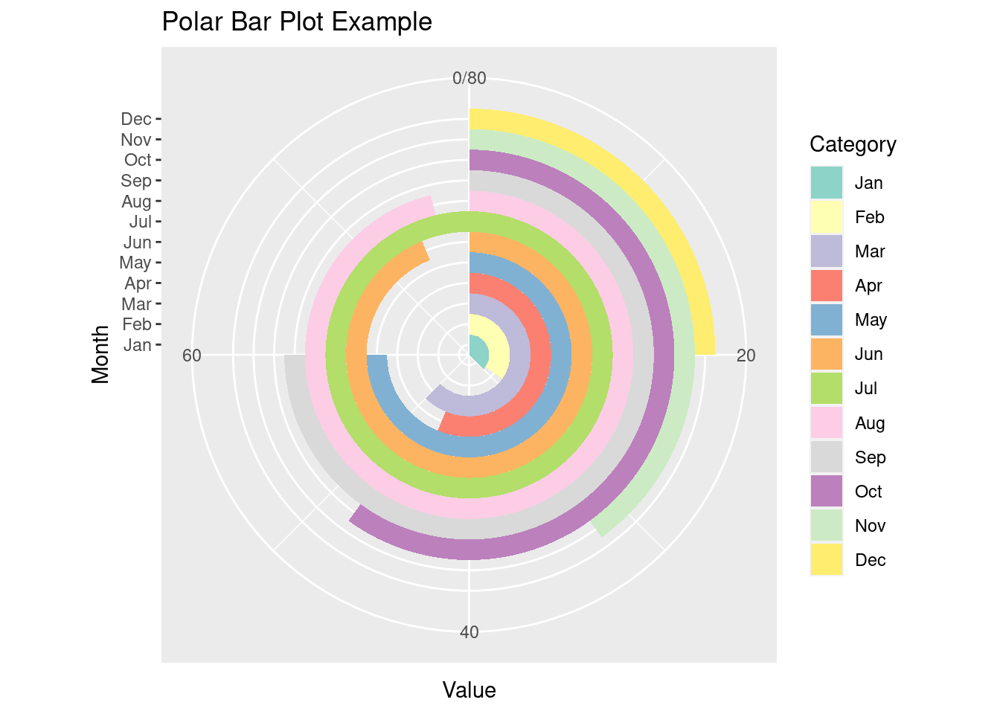

Chapter 13 Problem 3: Chloropeth map
In today’s class we created cloropleth maps of states in the US based on ACS data.
states <- map_data("state")
ACS <- ACS <- read.csv("https://raw.githubusercontent.com/deepbas/statdatasets/main/ACS.csv")
ACS <- dplyr::filter(ACS, !(region %in% c("Alaska", "Hawaii"))) # only 48+D.C.
ACS$region <- tolower(ACS$region) # lower case (match states regions)13.0.1 (a) Mapping median income
Create a cloropleth plot that uses color to create a MedianIncome map of the US.
Click for answer
Answer:
# map median income
ggplot(data=ACS) + coord_map() +
geom_map(aes(map_id = region, fill = MedianIncome), map = states) +
expand_limits(x=states$long, y=states$lat) + ggtitle("Median Income")
13.0.2 (b) Mapping deviations from national median income
The median income in the US in 2016 was estimated to be $27,000. Redraw your map in (a) to visualize each state’s deviation from national median income.
Click for answer
Answer:
# compare state income to national income
ggplot(data=ACS) + coord_map() +
geom_map(aes(map_id = region, fill = MedianIncome - 27000), map = states) +
expand_limits(x=states$long, y=states$lat) + ggtitle("Deviation from national median income")
13.0.3 (c) Changing numerically scaled color
You should use a diverging color for (b) to highlight larger deviations from the national median. Add scale_fill_distiller to the map from (b) and select a diverging palette.
Click for answer
Answer:
# change to a diverging color
ggplot(data=ACS) + coord_map() +
geom_map(aes(map_id = region, fill = MedianIncome - 27000), map = states) +
expand_limits(x=states$long, y=states$lat) + ggtitle("Deviation from national median income") +
scale_fill_distiller(type = "div")
13.0.4 (d) Fixing a midpoint on a diverging scale
Use scale_fill_gradient2 to fix a midpoint scale value at a white color, with diverging colors for larger positive and negative values. Apply this color to your map in (b) and fix the midpoint at an appropriate value.
Click for answer
Answer:
# change to a gradient fill color
ggplot(data=ACS) + coord_map() +
geom_map(aes(map_id = region, fill = MedianIncome - 27000), map = states) +
expand_limits(x=states$long, y=states$lat) + ggtitle("Deviation from national median income") +
scale_fill_gradient2(midpoint = 0)
13.1 (Optional)
Let’s learn how to create a polar bar plot with custom colors.
data <- data.frame(
Category = factor(1:12, labels = month.abb),
Value = c(30, 28, 50, 45, 60, 75, 80, 77, 60, 48, 32, 20)
)Click for answer
p <- ggplot(data, aes(x = Category, y = Value, fill = Category)) +
geom_bar(stat = "identity", width = 1) +
coord_polar(theta = "y") +
scale_fill_brewer(palette = "Set3") +
labs(title = "Polar Bar Plot Example", x = "Month", y = "Value")
p